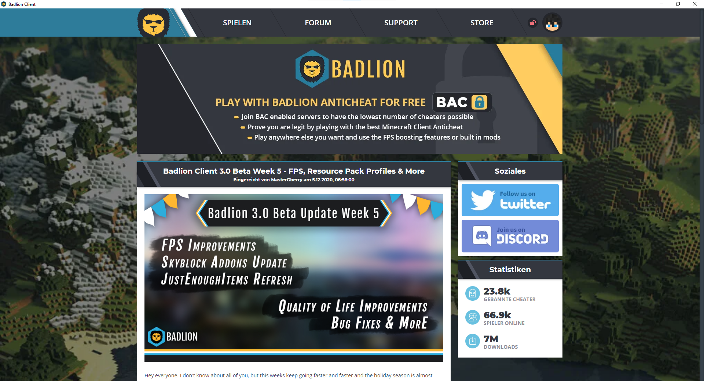
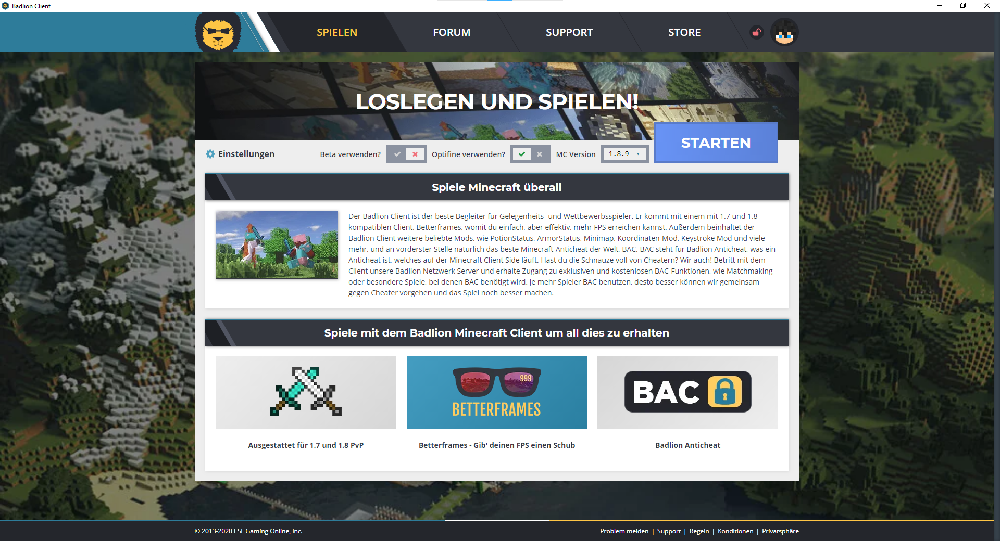
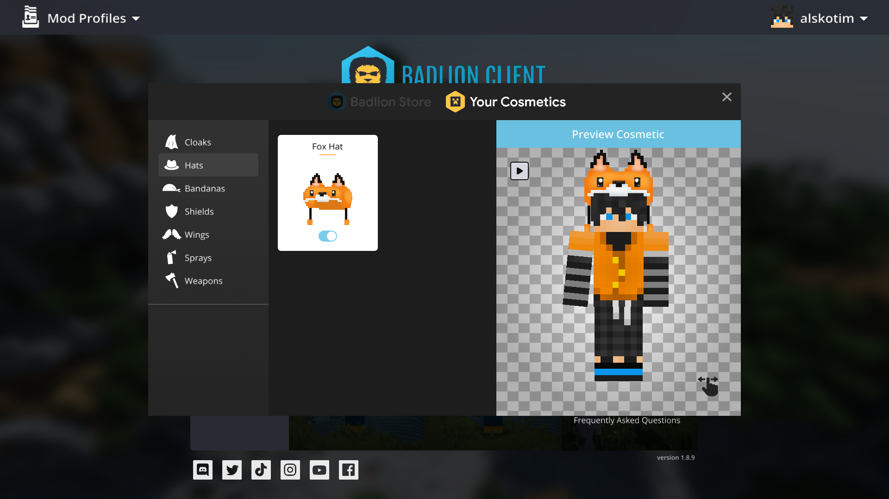
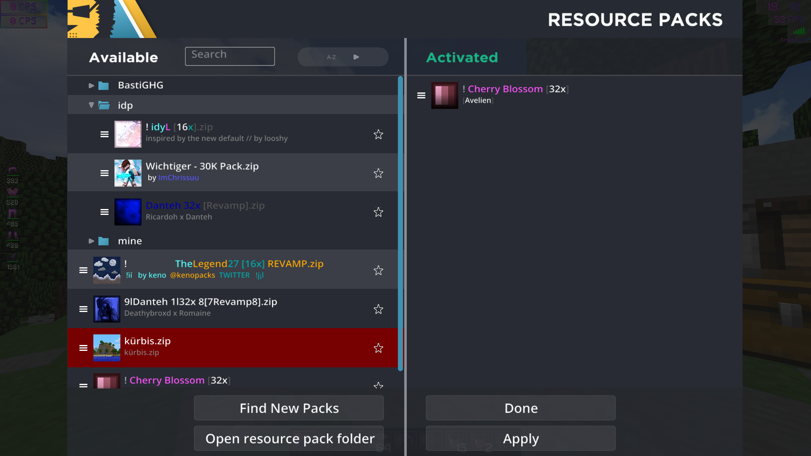
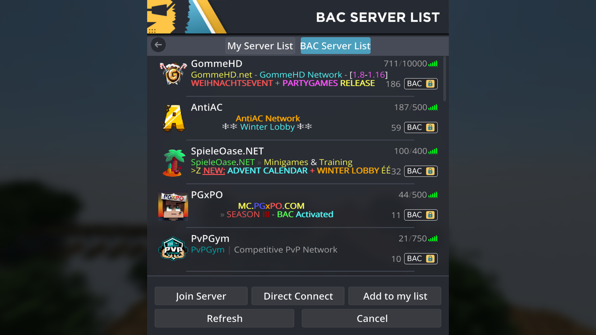
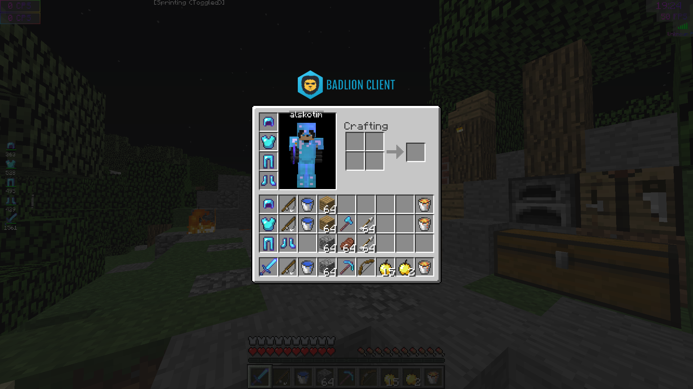
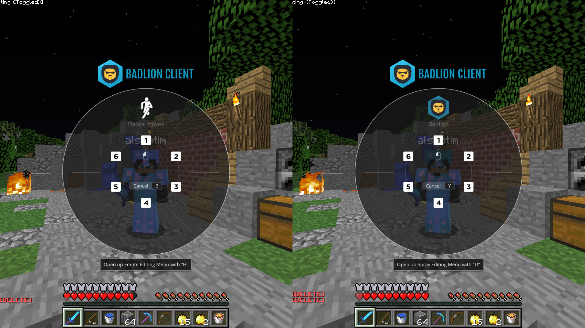
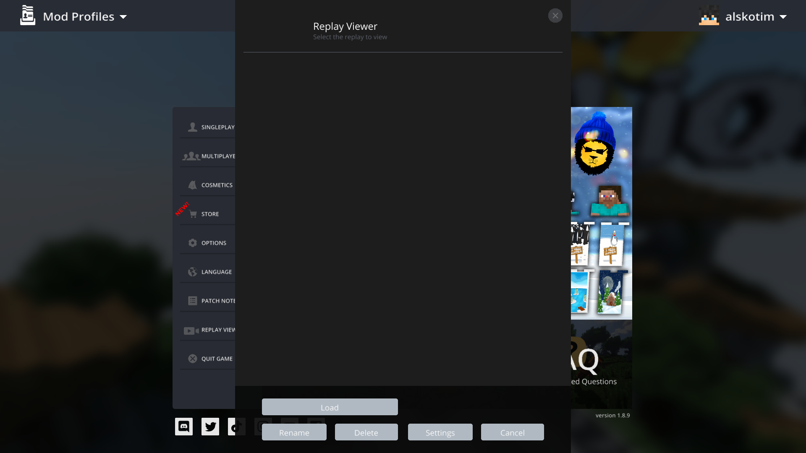

Nachdem man sich im Launcher vom Badlion Client eingeloggt hat, sieht man Neuigkeiten, Kontakte über Discord oder Twitter und Statisiken, Cheater, die von BAC gebannt worden sind, aktuelle Spieleranzahl, die mit dem Badlion Client spielen, und wie oft der Badlion Client gedownloaded wurde. Oben, über den Reiter "Spielen" kommt man zur Spiele-Seite, über "Forum" kommt man zum Forum des Badlion Client, über "Support" zum Support, "Store" zum Badlion Store, an dem roten, evt. grünem Schloss sieht man, ob man auf einem BAC-Server ist und vom Anticheat registriert wurde und an deinem Spieler-Kopf-Zeichen kommt man zu seinem Profil.

Im Reiter "Spielen" im Launcher vom Badlion Client, kann man Minecraft starten. Dabei kann man die Version auswählen (PvP am besten 1.8.9 oder 1.7.10), dann ob man Optifine verwenden will oder, wenn man sich es gekauft hat, ob man die Badlion-Beta verwenden will (Aktuell: Badlin 3.0). In den Einstellungen kann man einstellen, ob man im Discord-Rich presence seinen aktuellen BAC-Server anzeigen lassen will, ob man den Badlion-Client im Debug-Mode starten will (Nur wenn es der Support von Badlion Client es anweist), wie viel RAM man verwenden will (am besten höchstens die Hälfte an RAM, die einem zur Verfügung steht), wo Minecraft installiert ist, welche Sprache man verwendet und in welcher Auflösung spielt.

Wenn man Badlion Cosmetics hat, kann man diese im Client unter Cosmetics finden. Unter den einzelnen Reitern kann man diese finden und die Cosmetics ein und aus stellen. Cosmetics bekommt man über den Badlion Shop, diese kann man für sich selber kaufen oder man schenkt sie jemand anderem.

Viele Spieler spielen vorallem in der Minecraft 1.8 mit einem Resource Pack, welches die Texturen des Spiels verändert. Badlion hat das GUI davon verändert. Man kann in den Minecraft Files (meistens und C:/Users/"user"/AppData/Roaming/.minecraft/) einen Ordner erstellen und dieser wird auch im Client angezeigt. Um ein Resource Pack auszuwählen, kann man einfach das gewünschte Pack von links nach rechts ziehen. Weitere Rescoure Packs kann man im Badlion Client unter "Find New Packs" finden, wo man in ein neues Menu gelangt, wo man Resource Packs von resourcepacks24 findet.

Der Badlion Client hat, anders als der normale Minecraft Client, zwei verschiedene Serverlisten. Die erste Serverlist ist genause wie die normale Serverlist von Minecraft. Die zweite aber ist eine BAC-Serverlist, wo alle größeren Server aufgelistet sind, die BAC, also Badlion-Anticheat, sich gekauft haben und untestützt werden.

Wenn man mit dem Badlion Client in irgendein Inventar geht, dann sieht man das Badlion Logo. Das Logo kann man sich entweder links unten, rechts unten oder über dem Inventar einzeigen lassen. Außerdem sieht man im Inventar noch seine Cosmetics und, wenn man es sich anzeigen lässt, seinen Displayname.

Mit dem Badlion Client kann man emoten und Sprays sprühen - daführ gibt es zwei Wheels/Auswahlfenster, Emotewheel/-menu(links) und Spraywheel/-menu(rechts). Badlion benutzt die Tänze von Fortnite, Sprays sind eigen erstellt. Das Emote-Editing-Menu kann man über die Standarteinstellung "H" erreichen und das Spray-Editing-Menu über "U", wo man sein Wheel mit verschiedenen Emotes/Sprays belegen kann.

Minecraft unterstützt andere Launchoptinen. So gibt es z.B. Forge, womit man Mods hizufügen kann. Ein Mod ist der Replay-Mod, womit man in einer dritten Person-Ansicht Minecraft aufnehmen kann. Badlion unterstützt dieses. Diese Replays kann man dann unter "Replay-Viewer" angucken. Badlion gibt außerdem ein automatisches Rendersystem für das Video.